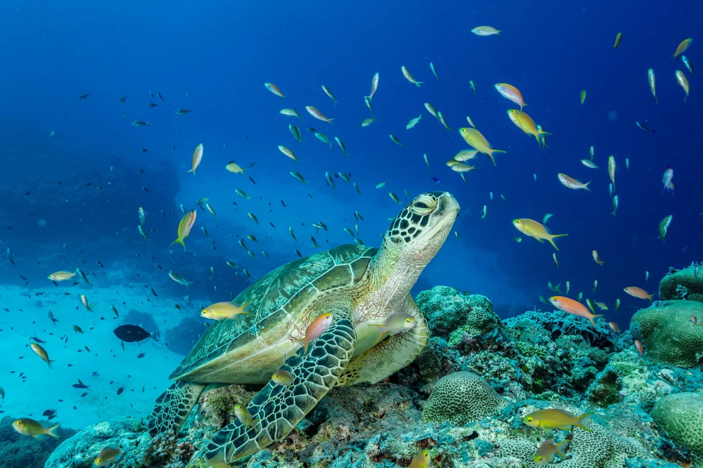

Frutas e legumes são menos nutritivos do que costumavam ser

Evidências crescentes mostram que muitos dos alimentos integrais de hoje não são tão ricos em vitaminas e nutrientes como eram há 70 anos, colocando a saúde das pessoas em risco potencial. Ler mais...
Reduzir combustíveis fósseis pode evitar extinção em massa no oceano
Se o consumo não desacelerar, mudanças climáticas podem provocar as piores perdas da vida marinha no oceano nos últimos 252 milhões de anos da Ler mais...
Eclipse lunar de 15 de maio: como observar a Lua de Sangue
O próximo eclipse lunar contará com a chamada Lua Vermelha, ou Lua de Sangue, e será visível em grande parte do continente americano. Saiba como ela ocorre e a origem do nome. Ler mais...